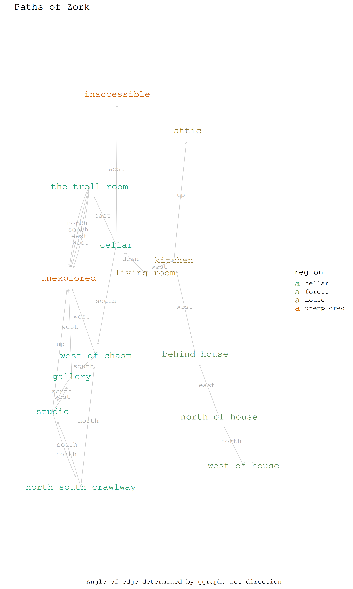

# A tibble: 3 × 4
perspective_location region interactivity loot
<chr> <chr> <chr> <chr>
1 west of house forest solved: mailbox leaflet
2 north of house forest none none
3 forest forest song bird? none
# A tibble: 3 × 4
perspective_location perspective_to_target target_location discovered
<chr> <chr> <chr> <dttm>
1 west of house north north of house 2024-10-30 00:00:00
2 north of house east behind house 2024-10-30 00:00:00
3 behind house west kitchen 2024-10-30 00:00:00
get_zork_graph <-function(zork_edges, zork_nodes, selected_region='all') {if (selected_region !='all') { zork_nodes <- zork_nodes |>filter(region %in%c(selected_region, 'unexplored')) } zork_base_graph <- zork_edges |>mutate(from = perspective_location,to = target_location ) |># does order matter?select(from, to, everything()) |>as_tbl_graph()# Join the nodes data frame to the nodes of the graph zork_graph <- zork_base_graph |>activate(nodes) |># add attributes to nodesinner_join(zork_nodes, by =c("name"="perspective_location"))return(zork_graph)}get_zork_graph(zork_edges, zork_nodes)
# A tbl_graph: 14 nodes and 22 edges
#
# A directed multigraph with 1 component
#
# Node Data: 14 × 4 (active)
name region interactivity loot
<chr> <chr> <chr> <chr>
1 west of house forest solved: mailbox leaflet
2 north of house forest none none
3 behind house forest window to house none
4 kitchen house sack water, lunch, garlic
5 living room house rug, locked door to west sword, lantern
6 cellar cellar none none
7 west of chasm cellar unknown unknown
8 gallery cellar painting none
9 studio cellar note, 69 colours none
10 north south crawlway cellar hole above, no climbing unknown
11 the troll room cellar troll none
12 attic house none rope, knife, clay
13 inaccessible unexplored none none
14 unexplored unexplored unknown unknown
#
# Edge Data: 22 × 6
from to perspective_location perspective_to_target target_location
<int> <int> <chr> <chr> <chr>
1 1 2 west of house north north of house
2 2 3 north of house east behind house
3 3 4 behind house west kitchen
# ℹ 19 more rows
# ℹ 1 more variable: discovered <dttm>
# really must make sense of this at some pointcols_f <-colorRampPalette(RColorBrewer::brewer.pal(8, 'Dark2'))n_regions <-nrow(zork_nodes)zork_graph |>ggraph() +geom_edge_fan(aes(label = perspective_to_target), label_dodge =unit(2.5, 'mm'),alpha =0.8,colour ='grey',label_size =6,label_colour ='darkgrey',family ='Courier',arrow =arrow(length =unit(2, 'mm')), end_cap =circle(1, 'cm') ) +geom_node_text(aes(label = name,colour = region ),size =8,family ='Courier' ) +# themingscale_edge_colour_manual(values =cols_f(n_regions)) +scale_colour_manual(values =cols_f(n_regions)) +theme_minimal(base_family ='Courier',base_size =20 ) +theme(axis.ticks =element_blank(),axis.text =element_blank(),panel.grid =element_blank() #,# plot.margin = margin(30, 30, 30, 30) # Adjust plot margins ) +scale_x_continuous(expand =expansion(mult =0.2)) +# Add space around x-axisscale_y_continuous(expand =expansion(mult =0.2)) +# Add space around y-axislabs(title ="Paths of Zork",x ='',y ='',caption ="Angle of edge determined by ggraph, not direction" )
Using "stress" as default layout

Got murdered by the troll again, predictable.
You clearly are a suicidal maniac. We don’t allow psychotics in the dungeon, since they may harm other adventurers. Your remains will be installed in the land of the living dead, where your fellow adventurers may gloat over them.Your score is 35 [total of 585 points], in 71 moves. This gives you the rank of Amateur Adventurer.